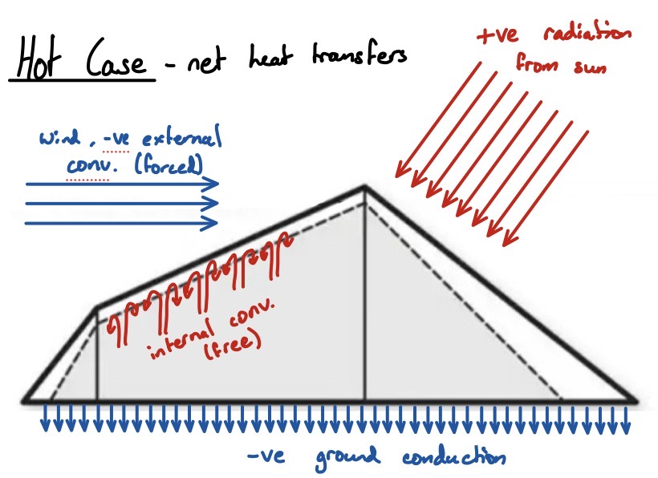
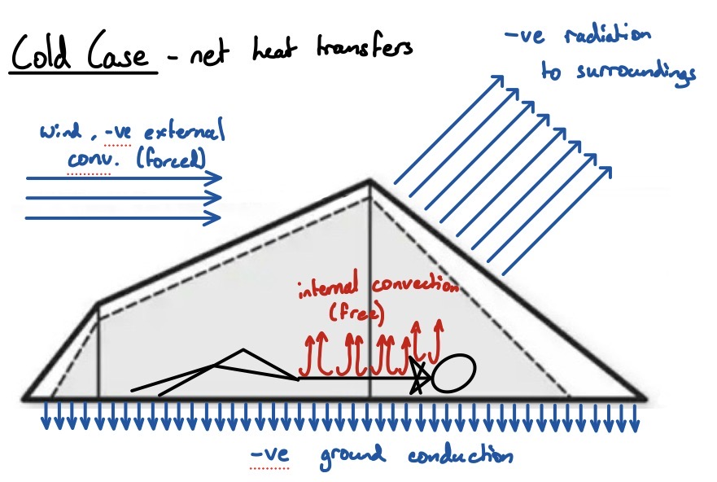
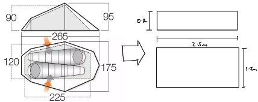
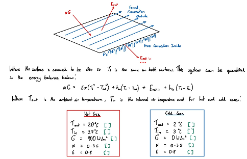

Thermal engineering · Heat transfer
Thermal comfort in a camping tent
Using an energy balance to assess summer daytime overheating and cold-night heat loss.
December 2025

Project overview
I modelled a simplified tent and its occupants using weather data, heat-transfer correlations and dimensionless analysis. The assessment considered convection, radiation and ground conduction for hot daytime and cold nighttime conditions.
My contribution
I developed the thermal assessment and used it to propose ventilation and insulation changes for an outdoor-equipment design brief.
Engineering approach
- Separate hot and cold scenarios because their dominant heat-transfer mechanisms and design responses differ.
- Compare predicted occupant heat storage with the coursework comfort criterion.
- Assess increased ventilation for the hot case and a low-emissivity liner for the cold case.
Results and scope
Under the assumed airflow change, side vents increased calculated convective cooling from 18.9 to 34.3 W/m². The 15.4 W/m² increase exceeded the 14.3 W/m² reduction required in the hot-case model. A reflective liner was proposed to reduce radiative heat loss in the cold scenario.
These are simplified model predictions. Interpretation depends on environmental conditions, airflow, exposed area and occupant/clothing assumptions; the proposed modifications were not experimentally validated in this assessment.
Project figures





